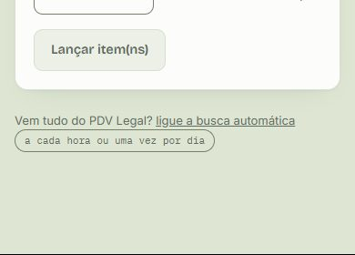
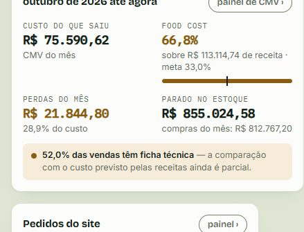
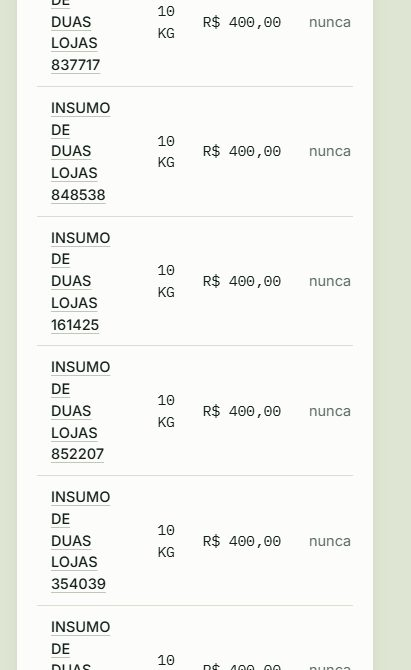
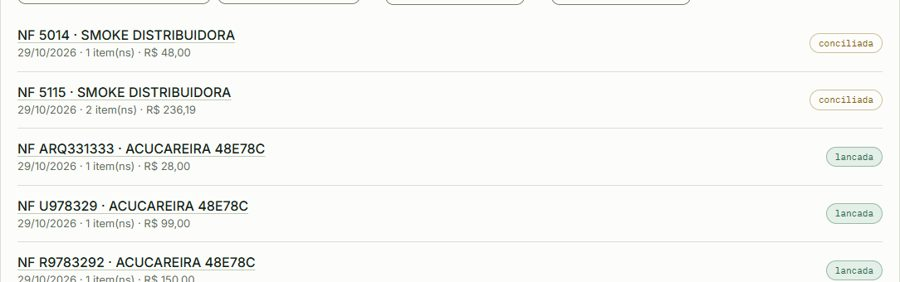

<title>Auditoria do Botané</title>
<meta name="claude:viewport-fit-sides" content="cover">
<link rel="preconnect" href="https://fonts.googleapis.com">
<link rel="stylesheet" href="https://fonts.googleapis.com/css2?family=Bricolage+Grotesque:opsz,wght@12..96,500;12..96,700&family=Newsreader:opsz,wght@6..72,400;6..72,500&family=IBM+Plex+Mono:wght@400;500&display=swap">
<style>
/* Layout: uma coluna de leitura; cada achado é uma ficha com gravidade, onde e o que fazer. */
:root {
  --papel: #dee6d3; --superficie: #fcfdfa; --tinta: #14201a; --suave: #5d6c61; --linha: #d3dbcb;
  --erva: #2c6a4a; --erva-claro: #e3efe7; --alerta: #8a5d12; --alerta-claro: #f6ecd9;
  --erro: #95332a; --erro-claro: #f7e7e4;
  --f-titulo: "Bricolage Grotesque", "Segoe UI", system-ui, sans-serif;
  --f-texto: "Newsreader", Georgia, serif;
  --f-dado: "IBM Plex Mono", ui-monospace, Consolas, monospace;
}
@media (prefers-color-scheme: dark) { :root:not([data-theme="light"]) {
  --papel: #121a15; --superficie: #1a241e; --tinta: #e6ece4; --suave: #9fb0a3; --linha: #2e3b33;
  --erva: #6fbf93; --erva-claro: #1f3a2b; --alerta: #e0b162; --alerta-claro: #3a2f1a;
  --erro: #e88a7f; --erro-claro: #3d2220; color-scheme: dark } }
:root[data-theme="dark"] {
  --papel: #121a15; --superficie: #1a241e; --tinta: #e6ece4; --suave: #9fb0a3; --linha: #2e3b33;
  --erva: #6fbf93; --erva-claro: #1f3a2b; --alerta: #e0b162; --alerta-claro: #3a2f1a;
  --erro: #e88a7f; --erro-claro: #3d2220; color-scheme: dark }
* { box-sizing: border-box }
body { background: var(--papel); color: var(--tinta); font-family: var(--f-texto); font-size: 17px; line-height: 1.55;
  padding-left: max(16px, env(safe-area-inset-left, 0px)); padding-right: max(16px, env(safe-area-inset-right, 0px)); padding-block: 40px 64px }
main { max-width: 860px; margin: 0 auto; display: flex; flex-direction: column; gap: 36px }
h1, h2, h3 { font-family: var(--f-titulo); text-wrap: balance; margin: 0; line-height: 1.15 }
h1 { font-size: clamp(30px, 5vw, 42px); font-weight: 700; letter-spacing: -0.02em }
h2 { font-size: 24px; font-weight: 700; letter-spacing: -0.01em }
h3 { font-size: 17px; font-weight: 700 }
p { margin: 0 }
.olho { font-family: var(--f-dado); font-size: 12px; letter-spacing: .08em; text-transform: uppercase; color: var(--suave) }
.abre { display: flex; flex-direction: column; gap: 12px }
.abre p.lead { max-width: 65ch; color: var(--suave) }
.numeros { display: grid; grid-template-columns: repeat(auto-fit, minmax(150px, 1fr)); gap: 12px }
.numeros div { background: var(--superficie); border: 1px solid var(--linha); border-radius: 10px; padding: 12px 14px; min-width: 0 }
.numeros b { display: block; font-family: var(--f-dado); font-size: 24px; font-weight: 500; font-variant-numeric: tabular-nums }
.numeros span { font-family: var(--f-titulo); font-size: 13px; color: var(--suave) }
section { display: flex; flex-direction: column; gap: 14px }
section > p.intro { max-width: 65ch; color: var(--suave) }
.prioridades { background: var(--superficie); border: 1px solid var(--linha); border-radius: 12px; padding: 18px 20px; display: flex; flex-direction: column; gap: 10px }
.prioridades ol { margin: 0; padding-left: 22px; display: flex; flex-direction: column; gap: 8px }
.lista { display: flex; flex-direction: column; border-top: 1px solid var(--linha) }
.achado { display: grid; grid-template-columns: 74px 1fr; gap: 6px 14px; padding: 14px 0; border-bottom: 1px solid var(--linha) }
.achado > div { min-width: 0; display: flex; flex-direction: column; gap: 5px }
.onde { font-family: var(--f-dado); font-size: 12.5px; color: var(--suave) }
.faz { font-size: 16px }
.faz::before { content: "Sugestão: "; font-family: var(--f-titulo); font-weight: 700; font-size: 14px; color: var(--erva) }
.g { align-self: start; justify-self: start; font-family: var(--f-dado); font-size: 11.5px; letter-spacing: .04em; text-transform: uppercase;
  padding: 3px 8px; border-radius: 999px; border: 1px solid currentColor; white-space: nowrap }
.g.alta { color: var(--erro); background: var(--erro-claro) }
.g.media { color: var(--alerta); background: var(--alerta-claro) }
.g.baixa { color: var(--erva); background: var(--erva-claro) }
.feito { display: inline-block; margin-left: 6px; font-family: var(--f-dado); font-size: 11px; letter-spacing: .04em; text-transform: uppercase;
  padding: 2px 7px; border-radius: 999px; color: var(--superficie); background: var(--erva); vertical-align: 2px }
.feito.parcial { background: var(--alerta) }
.feito.fora { background: var(--suave) }
figure { margin: 6px 0 0; display: flex; flex-direction: column; gap: 6px }
figure img { border: 1px solid var(--linha); border-radius: 8px; max-width: 100%; height: auto; display: block }
figure.cel img { max-width: 300px }
figcaption { font-family: var(--f-titulo); font-size: 13px; color: var(--suave) }
code, .mono { font-family: var(--f-dado); font-size: .88em }
.nota { font-family: var(--f-titulo); font-size: 14px; color: var(--suave); max-width: 65ch }
@media (max-width: 520px) { .achado { grid-template-columns: 1fr } }
</style>

<main>
  <header class="abre">
    <p class="olho">Botané · versão 1.1.149 · 29/10/2026 · correções até a 1.1.152</p>
    <h1>Auditoria do sistema</h1>
    <p class="lead">Uma passada por todas as telas, no computador e no celular, procurando três
      tipos de melhoria: <strong>visual</strong> (o que aparece errado ou apertado),
      <strong>processo</strong> (onde o caminho confunde ou arrisca erro) e
      <strong>informação</strong> (onde o número na tela não diz o que parece dizer).</p>
    <div class="numeros">
      <div><b>92</b><span>telas fotografadas</span></div>
      <div><b>17</b><span>no tamanho de celular</span></div>
      <div><b>6</b><span>telas que vazavam para o lado no celular</span></div>
      <div><b>28</b><span>pontos de melhoria</span></div>
    </div>
    <p class="nota">Como foi feito: as telas rodaram na base local (dados de teste), com medição
      automática de vazamento lateral, erros e tamanho de letra, e leitura de cada foto. Para a
      parte de informação, uma consulta só de leitura ao painel do sistema no ar. Nada foi gravado.</p>
  </header>

  <section>
    <h2>Por onde começar</h2>
    <div class="prioridades">
      <ol>
        <li><strong>O CMV desta semana no ar está negativo</strong> (−R$ 5.599) e o food cost aparece como −45%, um número que não existe. <span class="feito">corrigido</span></li>
        <li><strong>Lançar venda no celular</strong>: quantidade e valor ficam fora da tela. <span class="feito">corrigido</span></li>
        <li><strong>Seis telas vazam para o lado no celular</strong>: Início, Produtos, Estoque ▸ Painel, Notas de entrada, Documentos e Cardápio Vivo ▸ Atenção. <span class="feito">corrigido</span></li>
        <li><strong>O aviso de Fichas parava de contar em 100</strong>; na base de teste são 714. O 100 era um teto da consulta. <span class="feito">corrigido</span></li>
        <li><strong>Notas de entrada mostram “lancada”</strong>, sem cedilha, em toda a lista. <span class="feito">corrigido</span></li>
      </ol>
    </div>
  </section>

  <section>
    <h2>Informação</h2>
    <p class="intro">Onde o número na tela engana, ou falta a régua para lê-lo. As três primeiras vêm do sistema no ar.</p>
    <div class="lista">
      <article class="achado"><span class="g alta">Alta</span><div>
        <h3>Food cost negativo aparece como se fosse um número <span class="feito">corrigido</span></h3>
        <p class="onde">No ar · Início e CMV · semana de 26/10 a 01/11</p>
        <p>O painel do ar dá CMV de <span class="mono">−R$ 5.599,42</span> e food cost de
          <span class="mono">−45,0%</span>, com receita de R$ 12.443. O Início já pintava o CMV negativo
          de vermelho, com legenda; o food cost e o painel do CMV mostravam o número como se fosse
          comum. CMV negativo quer dizer que o estoque final ficou maior que o inicial mais as
          compras: uma contagem inflada, ou uma entrada que não foi lançada como compra.</p>
        <p class="faz">feito: o painel do CMV abre com o aviso “esta conta não fecha”, as causas e
          o link para a memória de cálculo; o food cost vira “—” no painel e no Início. Falta
          conferir no ar a semana de 26/10 para achar a entrada que sobra.</p>
      </div></article>
      <article class="achado"><span class="g alta">Alta</span><div>
        <h3>O aviso de Fichas conta no máximo 100 <span class="feito">corrigido</span></h3>
        <p class="onde">Fichas técnicas · faixa amarela do topo</p>
        <p>A faixa dizia “100 produto(s) de produção própria ainda sem ficha”, mas a consulta pedia
          <code>limite=100</code> e contava a lista. Na base de teste eram 714. O alerta do Início
          conta outra coisa (produção própria sem ficha <em>homologada</em>: 426 no ar), e por isso
          os dois números nunca vão ser iguais.</p>
        <p class="faz">feito: a faixa traz o total do servidor e diz “produtos produzidos ainda sem
          ficha nenhuma”, para não se confundir com o alerta.</p>
      </div></article>
      <article class="achado"><span class="g media">Média</span><div>
        <h3>Sem meta de food cost, o Início não tem régua <span class="feito parcial">em parte</span></h3>
        <p class="onde">No ar · parâmetros da loja</p>
        <p>A meta de food cost da loja está vazia no ar. Sem ela, a barra do food cost não marca onde
          deveria estar e o número fica solto.</p>
        <p class="faz">feito: na tela: sem meta, o cartão diz “sem meta: defina na loja”. Definir a meta no ar é com você (Lojas ▸ a loja ▸ Meta de food cost).</p>
      </div></article>
      <article class="achado"><span class="g media">Média</span><div>
        <h3>O CMV teórico cobre só 38% da receita <span class="feito fora">fica de fora</span></h3>
        <p class="onde">No ar · CMV · cobertura de ficha 37,7%</p>
        <p>Com 426 produzidos sem ficha homologada e 2.175 saídas com custo provisório, o CMV teórico
          e a variância ainda medem o cadastro, não a cozinha. A tela já avisa isso, mas a lista de
          fichas a fazer não diz por onde começar.</p>
        <p class="faz">fica de fora: essa fila pela receita existiu (“Por onde começar”) e saiu da tela a seu pedido em 26/10. A rota continua na API, se quiser de volta.</p>
      </div></article>
      <article class="achado"><span class="g media">Média</span><div>
        <h3>“Períodos fechados” lista períodos reabertos <span class="feito">corrigido</span></h3>
        <p class="onde">CMV · quadro Períodos fechados</p>
        <p>Na base de teste todas as linhas dizem “reaberto” embaixo do título “Períodos fechados”.</p>
        <p class="faz">feito: o quadro chama “Fechamentos”, os reabertos vêm apagados, e food cost de CMV negativo é “—” ali também.</p>
      </div></article>
      <article class="achado"><span class="g media">Média</span><div>
        <h3>“Vencendo” mistura o que já venceu há meses <span class="feito">corrigido</span></h3>
        <p class="onde">Alertas · quadro Vencendo</p>
        <p>O quadro abre com lotes que “venceram há 292d”. Quem procura o que vai vencer amanhã
          precisa rolar por cima do que já é perda.</p>
        <p class="faz">feito: dois quadros: “Vencidos — dar baixa” (só quando houver) e “Vencem nos próximos dias”.</p>
      </div></article>
      <article class="achado"><span class="g media">Média</span><div>
        <h3>Precificação mostra preço mínimo sem estar configurada <span class="feito">corrigido</span></h3>
        <p class="onde">Precificação</p>
        <p>A faixa diz que a precificação não foi configurada, mas a tabela traz “mínimo sugerido”
          e os cartões dizem “abaixo da margem: 0 de 0”.</p>
        <p class="faz">feito: sem configuração ficam só a faixa e a lista de custo e preço; somem os cartões, as colunas de sugestão e o Aplicar.</p>
      </div></article>
      <article class="achado"><span class="g baixa">Baixa</span><div>
        <h3>Faturado e “por categoria” não batem à primeira vista <span class="feito">corrigido</span></h3>
        <p class="onde">Vendas ▸ Painel</p>
        <p>O cartão diz R$ 964,50 e o quadro por categoria soma R$ 972,00. A diferença é o desconto
          dos cupons, que só aparece numa linha de texto abaixo.</p>
        <p class="faz">feito: os quadros por categoria e por setor dizem “valor dos itens, antes do desconto do cupom”. Somar já descontado exigiria repartir o desconto do cupom entre categorias, o que seria inventar.</p>
      </div></article>
      <article class="achado"><span class="g baixa">Baixa</span><div>
        <h3>Números sem separador de milhar <span class="feito">corrigido</span></h3>
        <p class="onde">Produtos · “3798 ativos no total”</p>
        <p>O cabeçalho escreve 3798, e o rodapé da mesma lista escreve 3.798. O cabeçalho ainda sai
          na fonte de texto corrido, diferente do resto dos números.</p>
        <p class="faz">feito: “3.798 ativos no total”. A fonte serifada fica: a descrição de todo cartão é texto corrido, na voz da casa.</p>
      </div></article>
    </div>
  </section>

  <section>
    <h2>Visual</h2>
    <p class="intro">O que aparece cortado, apertado ou fora do lugar. O celular concentra os problemas mais sérios.</p>
    <div class="lista">
      <article class="achado"><span class="g alta">Alta</span><div>
        <h3>Lançar venda no celular esconde quantidade e valor <span class="feito">corrigido</span></h3>
        <p class="onde">Vendas ▸ Lançar · celular</p>
        <p>A tabela de itens rola para o lado dentro do cartão. Quem lança no celular vê o produto e
          precisa arrastar a linha para achar onde digitar a quantidade.</p>
        <figure class="cel">
          <figcaption>A coluna Qtd começa na borda; valor e total ficam fora da tela.</figcaption></figure>
        <p class="faz">feito: no celular cada item vira um bloco, com o produto em cima e quantidade e
          valor lado a lado embaixo, cada um com o rótulo.</p>
      </div></article>
      <article class="achado"><span class="g alta">Alta</span><div>
        <h3>Seis telas vazam para o lado no celular <span class="feito">corrigido</span></h3>
        <p class="onde">Início · Produtos · Estoque ▸ Painel · Notas de entrada · Documentos · Cardápio Vivo ▸ Atenção</p>
        <p>No <strong>Início</strong>, os cartões “do mês” e “Precisa de atenção” encostam e passam
          da borda direita. Em <strong>Produtos</strong>, os quatro botões do topo se espremem e
          “Código de barras das notas” quebra em cinco linhas. No <strong>Painel de estoque</strong>,
          os cartões do topo cortam o valor (R$ 855.024,58) e a tabela “Parado há mais de 60 dias”
          põe uma palavra por linha, com a coluna “Última” fora da tela.</p>
        <figure class="cel">
          <figcaption>Início: o cartão do mês não tem margem à direita.</figcaption></figure>
        <figure class="cel">
          <figcaption>Painel de estoque: nome quebrado palavra a palavra, última coluna cortada.</figcaption></figure>
        <p class="faz">feito: a causa comum era a grade sem <code>min-w-0</code>, que deixava uma linha
          longa ditar a largura da coluna. As seis telas cabem em 390 px; em Produtos os botões
          quebram de linha; no painel, a última saída desce para baixo do nome do produto.
          As telas de detalhe foram medidas e já cabiam.</p>
      </div></article>
      <article class="achado"><span class="g media">Média</span><div>
        <h3>“lancada” sem cedilha <span class="feito">corrigido</span></h3>
        <p class="onde">Notas de entrada · etiqueta de situação</p>
        <p>A etiqueta é o código da situação em minúsculas (<code>LANCADA</code> → “lancada”). Só
          “não encontrada no Omie” tem rótulo próprio.</p>
        <p class="faz">feito: todas as situações têm rótulo (importada, conciliada, lançada,
          cancelada, não encontrada no Omie).</p>
      </div></article>
      <article class="achado"><span class="g media">Média</span><div>
        <h3>Listas de notas e de documentos usam metade da largura <span class="feito">corrigido</span></h3>
        <p class="onde">Notas de entrada · Vendas ▸ Documentos</p>
        <p>Cada linha põe tudo à esquerda (número, fornecedor, itens, valor) e só a situação na
          ponta direita. No computador sobra uma faixa vazia no meio, e o valor, que é o que se
          compara, vem em letra pequena e cinza.</p>
        <figure>
          <figcaption>Notas de entrada no computador.</figcaption></figure>
        <p class="faz">feito: no computador, colunas com cabeçalho e o valor à direita, em negrito. No celular, como estava.</p>
      </div></article>
      <article class="achado"><span class="g media">Média</span><div>
        <h3>Texto cortado em seletores e campos <span class="feito">corrigido</span></h3>
        <p class="onde">CMV · Patrimônio · Perfil</p>
        <p>O período do CMV aparece como “outubro de 2026 (em cur”. No Patrimônio, a busca diz
          “Equipamento, código, n” e o filtro de situação, “Todos, menos os bai”. No Perfil, a tabela
          de chaves do Claude fica espremida numa coluna estreita e corta o “Último uso”.</p>
        <p class="faz">feito: seletor de período do CMV mais largo, busca do Patrimônio na linha inteira (“Sem os baixados” no filtro) e, no Perfil, a tabela de chaves com a largura da página.</p>
      </div></article>
      <article class="achado"><span class="g media">Média</span><div>
        <h3>Muitos botões soltos no topo das telas <span class="feito">corrigido</span></h3>
        <p class="onde">Notas de entrada (7) · Patrimônio (6) · Vendas ▸ Documentos (6)</p>
        <p>Em Notas de entrada os botões quebram em duas linhas, e o que importa no dia a dia
          (Importar, Lançar as conciliadas) tem o mesmo peso de “Vincular fornecedores”. No
          Patrimônio, Conferência, Valor e Manutenções são partes do módulo, mas aparecem como botões.</p>
        <p class="faz">feito: botão “Mais” em Notas de entrada (Relatório de compras, Vincular fornecedores), em Documentos (Por motivo, Lista de vendas) e no Patrimônio, que ganhou abas Bens · Conferência · Valor.</p>
      </div></article>
      <article class="achado"><span class="g media">Média</span><div>
        <h3>Setas de data pequenas demais para o dedo <span class="feito">corrigido</span></h3>
        <p class="onde">Início · Vendas ▸ Painel</p>
        <p>As setas ‹ › que trocam o dia têm cerca de 20 px. No celular é fácil errar o toque.</p>
        <p class="faz">feito: 40 × 40 de toque no Início, no Painel de vendas, em Por motivo e no Painel de estoque.</p>
      </div></article>
      <article class="achado"><span class="g baixa">Baixa</span><div>
        <h3>“(s)”, “(ns)” e “(ões)” pelo sistema todo <span class="feito parcial">em parte</span></h3>
        <p class="onde">Produtos, Fichas, Vendas, Contas a receber, Início…</p>
        <p>“1 porção(ões)”, “61 item(ns)”, “14 cupom(ns)”, “4 lote(s) enviados”. As telas novas (Valor
          do patrimônio) já escrevem o plural certo.</p>
        <p class="faz">feito: a função existe (<code>plural</code>, em <code>lib/numeros.ts</code>) e já vale em Início, Produtos, Fichas, Vendas, Lançar venda, Contas a receber, Notas de entrada, Painel de vendas, Catálogos, Papéis e no rodapé de paginação de todas as listas. As telas de uso raro trocam quando forem editadas.</p>
      </div></article>
      <article class="achado"><span class="g baixa">Baixa</span><div>
        <h3>Cartões vazios altos no Início <span class="feito">corrigido</span></h3>
        <p class="onde">Início · Pedidos do site e Mesas</p>
        <p>Os dois cartões esticam até a altura de “Para produzir” e ficam com um vão branco embaixo
          de “Nenhum pedido em aberto”.</p>
        <p class="faz">feito: cada cartão fica com a altura do próprio conteúdo.</p>
      </div></article>
      <article class="achado"><span class="g baixa">Baixa</span><div>
        <h3>Eixo do gráfico por hora com marcas quebradas <span class="feito">corrigido</span></h3>
        <p class="onde">Vendas ▸ Painel · Por hora do cupom</p>
        <p>O eixo marca 0, 2, 5, 7 e 10 e não diz a unidade (é faturado em reais).</p>
        <p class="faz">feito: marcas redondas e “R$” no eixo, em todos os gráficos de barra (Painel de vendas, Por motivo e perdas do Painel de estoque).</p>
      </div></article>
      <article class="achado"><span class="g baixa">Baixa</span><div>
        <h3>Telas que crescem sem fim <span class="feito">corrigido</span></h3>
        <p class="onde">Catálogos (40.500 px) · Papéis e permissões (8.100 px)</p>
        <p>Na base de teste, Catálogos abre todos os catálogos expandidos, um embaixo do outro.
          No ar há poucos, mas a tela não tem paginação nem recolhimento.</p>
        <p class="faz">feito: Catálogos com páginas (20 por vez); em Papéis, que já abria um papel por vez, a lista da esquerda rola dentro do cartão.</p>
      </div></article>
    </div>
  </section>

  <section>
    <h2>Processo</h2>
    <p class="intro">Onde o caminho confunde, pede passo a mais ou deixa o erro passar.</p>
    <div class="lista">
      <article class="achado"><span class="g media">Média</span><div>
        <h3>Motivo da venda: a opção e a dica dizem coisas diferentes <span class="feito">corrigido</span></h3>
        <p class="onde">Vendas ▸ Lançar · campo Motivo</p>
        <p>O campo já vem com “venda (não é consumo)” escolhido e a dica embaixo diz “em branco, é
          venda”. Não há campo em branco à vista.</p>
        <p class="faz">feito: a dica diz “troque só para consumo interno, perda, prêmio ou brinde”.</p>
      </div></article>
      <article class="achado"><span class="g media">Média</span><div>
        <h3>Exemplo de documento com data antiga <span class="feito">corrigido</span></h3>
        <p class="onde">Vendas ▸ Lançar · campo Documento</p>
        <p>O exemplo cinza é “fechamento-2026-08-26”. Parece um valor já preenchido, de agosto.</p>
        <p class="faz">feito: o exemplo é “número do cupom ou do fechamento”.</p>
      </div></article>
      <article class="achado"><span class="g media">Média</span><div>
        <h3>Contas a receber sem busca de pessoa <span class="feito">corrigido</span></h3>
        <p class="onde">Vendas ▸ Contas a receber · Em aberto</p>
        <p>A lista em aberto tem 214 pessoas na base de teste e só filtro de data. Para gerar o lote
          de uma pessoa é preciso rolar até ela.</p>
        <p class="faz">feito: campo Pessoa acima da lista, sem acento. Com a busca ativa, o lote sai só dos que ela mostra, e o botão diz isso.</p>
      </div></article>
      <article class="achado"><span class="g media">Média</span><div>
        <h3>Três avisos antes do número no CMV <span class="feito">corrigido</span></h3>
        <p class="onde">CMV · topo do painel</p>
        <p>Antes de ver o CMV, a tela mostra o aviso de período incompleto (com três linhas), o de
          teórico não confiável e o de grupos fora do CMV. O número que se veio ver fica na
          segunda dobra.</p>
        <p class="faz">feito: uma linha só, acima dos números: “3 coisas mudam este número: …”, que abre para o detalhe. O aviso vermelho do CMV negativo continua aberto.</p>
      </div></article>
      <article class="achado"><span class="g media">Média</span><div>
        <h3>Período de 19 a 25/10 ainda aberto no ar <span class="feito parcial">em parte</span></h3>
        <p class="onde">No ar · CMV</p>
        <p>A semana passada não foi fechada. Enquanto ela estiver aberta, alguém pode lançar com
          data de trás e mudar o número que já foi apresentado.</p>
        <p class="faz">feito: no sistema: o alerta sobe para “atenção” a partir do segundo dia e abre direto o período que falta. Fechar a semana no ar é com você.</p>
      </div></article>
      <article class="achado"><span class="g media">Média</span><div>
        <h3>Rascunhos acumulados <span class="feito parcial">em parte</span></h3>
        <p class="onde">No ar · Produtos</p>
        <p>252 rascunhos já em uso (em nota, venda ou estoque) e outros 797 que nunca foram usados.
          Os não usados poluem a busca e as listas de escolha.</p>
        <p class="faz">feito: filtro “Rascunho parado” em Produtos (sem nota aberta, venda em 30 dias nem saldo). O arquivar em lote ficou de fora: a limpeza no ar está com a equipe, pela tela.</p>
      </div></article>
      <article class="achado"><span class="g baixa">Baixa</span><div>
        <h3>“Média por dia” no modo Dia <span class="feito">corrigido</span></h3>
        <p class="onde">Vendas ▸ Painel</p>
        <p>Com um dia só, a média por dia repete o faturado.</p>
        <p class="faz">feito: no modo Dia o cartão é “Mesmo dia, semana passada”, com a data e os cupons.</p>
      </div></article>
      <article class="achado"><span class="g baixa">Baixa</span><div>
        <h3>“Itens vendidos sem produto” demora a abrir <span class="feito fora">medido</span></h3>
        <p class="onde">Vendas ▸ Itens vendidos sem produto</p>
        <p>Foi a tela mais lenta da passada: 12 segundos para abrir, contra 2 a 4 das outras.</p>
        <p class="faz">medido de novo: a consulta responde em 0,2 s e a tela abre em 0,05 s. Os 12 s foram a primeira compilação da tela no modo de desenvolvimento. A consulta já usa índice e corta em 100 linhas; nada a mudar.</p>
      </div></article>
    </div>
  </section>

  <section>
    <h2>O que está bom</h2>
    <p class="intro">Para não perder no caminho.</p>
    <div class="lista">
      <article class="achado"><span class="g baixa">Manter</span><div>
        <h3>Alertas com ação na própria linha</h3>
        <p>A tela “O que precisa de atenção” separa por urgência (agir hoje, atenção, quando puder) e
          cada linha leva direto ao lugar de resolver. É o modelo para os avisos do CMV.</p>
      </div></article>
      <article class="achado"><span class="g baixa">Manter</span><div>
        <h3>A conta do CMV aberta</h3>
        <p>O gráfico de cascata e a tabela “O que explica o CMV” deixam conferir de onde vem cada
          real. Poucos sistemas mostram isso.</p>
      </div></article>
      <article class="achado"><span class="g baixa">Manter</span><div>
        <h3>Explicação em cada tela</h3>
        <p>“saber mais” no topo, dica embaixo de cada campo e mensagem que diz o que fazer. Nenhuma
          tela abriu com erro de programa.</p>
      </div></article>
    </div>
  </section>

  <p class="nota">As fotos de todas as telas estão em <code>web/scripts/_fotos/auditoria/</code>, e o
    roteiro que as tira em <code>web/scripts/_auditoria.mjs</code>, para repetir depois das correções.</p>
</main>
